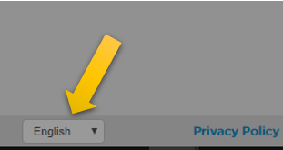

Jogo da Hora do Código
atividade para entregar no SIGAA
Material de apoio para a disciplina Linguagem de Programação da UACSA/UFRPE
Produzido pelo prof. João Pimentel
Use um cronômetro para saber quanto tempo você está estudando a cada dia. No fim da semana, comemore: "uau, eu estudei XX horas nesta semana!"
Vídeo 1 (3min):
O jogo que você irá jogar agora parece bem bobinho, mas à medida que as fases passam vai ficando mais complicado.
Se o jogo estiver em inglês, você pode clicar nesse menu que está no canto inferior esquerdo da tela e escolher a opção "Português (Brasil).

Nesse jogo você irá praticar os principais conceitos da programação: comandos em sequência, execução condicional, e repetição. Assim, quando você for estudar isso em Python, achará bem mais fácil.
Quando você concluir as 20 fases, aparecerá um certificado e um campo para você inserir o seu nome. Digite o seu nome completo (ATENÇÃO, nome completo) e aperte no botão "Enviar", para que ele apareça no certificado.

Salve o certificado e o envie para a "Atividade de São João" que está no SIGAA da disciplina. Para encontrar essa atividade, vá no menu da Turma Virtual, Seção "Atividades", e clique em "Tarefas".
Agora vá lá e divirta-se 😉
clique aqui para abrir o jogo